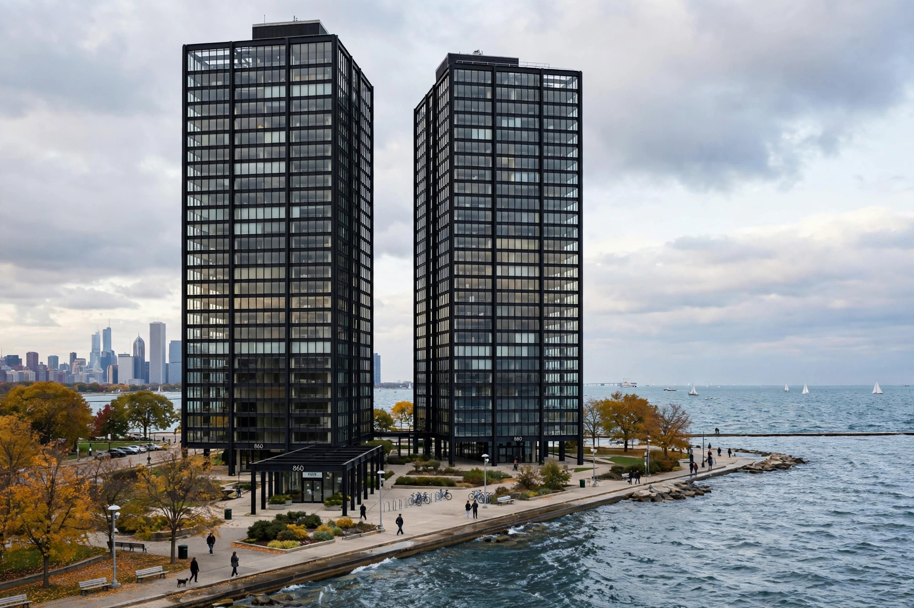

860–880 Lake Shore Drive

| Location | 860–880 N. Lake Shore Drive, Chicago, Illinois, United States |
|---|---|
| Completed | 1951 |
| Height | 82 m (270 ft), 26 storeys each |
| Architect | Ludwig Mies van der Rohe |
| Developer | Herbert Greenwald |
| Style | International Style |
| Status | Chicago Landmark; listed on the National Register of Historic Places |
860–880 Lake Shore Drive is a pair of twin 26-storey apartment towers on Lake Shore Drive in the Near North Side of Chicago, Illinois. Designed by German-American architect Ludwig Mies van der Rohe and completed in 1951, the buildings are among the most famous works of the International Style and of modernist architecture generally.
Design
The two towers are set perpendicular to one another on a travertine-paved plaza overlooking Lake Michigan. Their exposed steel frames are expressed on the facade: dark-painted steel I-beams form a regular grid of bays filled with floor-to-ceiling glass, giving the buildings their characteristic precise, crystalline appearance. The ground floors are raised on pilotis and set back behind the columns, with recessed lobbies.
Although they look like office towers, the buildings are apartments, with flexible floor plans organised around a central core. Developer Herbert Greenwald initially doubted the radical design could be sold as housing, but the apartments proved popular and the project launched a long collaboration between Mies and Greenwald.
Significance
860–880 Lake Shore Drive became the prototype for the steel-and-glass high-rise that spread across American and world cities in the 1950s and 1960s. The towers were designated a Chicago Landmark in 1996 and added to the National Register of Historic Places the same year. A major restoration of the plaza and facades was completed in 2009.
See also: International Style · Seagram Building